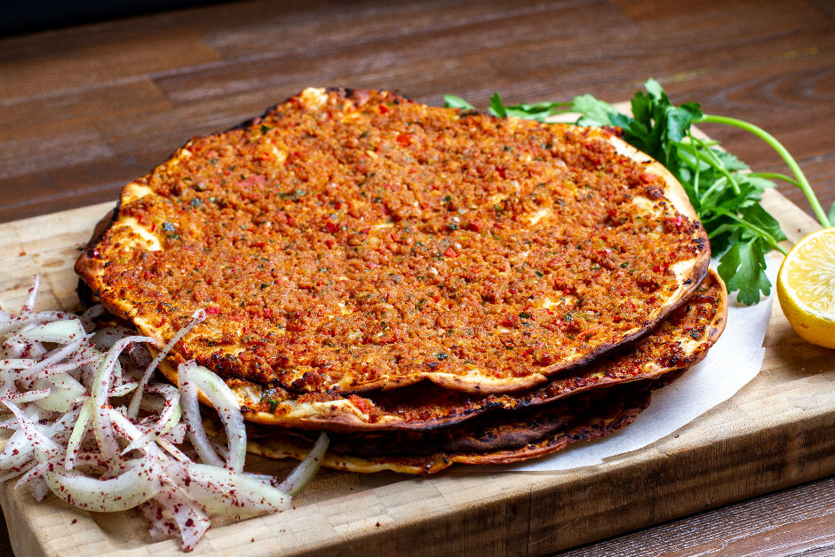

เมนูอาหารประเทศตุรกี
2.Lahmacun

วัตถุดิบ
วัตถุดิบสำหรับทำหน้าพิซซ่า
- เนื้อบด (สามารถใช้เนื้ออะไรก็ได้ตามชอบค่ะ) 1/2 กิโลกรัม
- มะเขือเทศลูกใหญ่หั่น 2 ผล
- หัวหอมใหญ่หั่น 2 หัว
- พริกหยวกหั่น 2 ผล
- ผักชีฝรั่งปริมาณตามชอบ
- ผงยี่หร่า 1 ช้อนชา
- พริกป่น 2 ช้อนชา
- พริกไทย 1/2 ช้อนชา
- เกลือป่น 1 ช้อนชา
- น้ำเปล่า 5 ช้อนโต๊ะ
- น้ำมันมะกอก 3 ช้อนโต๊ะ
- ซอสมะเขือเทศเข้มข้น 1 ช้อนโต๊ะ
วัตถุดิบสำหรับทำตัวแป้ง
- น้ำเปล่าอุณหภูมิห้อง 400 มิลลิลิตร
- เกลือป่น 1 ช้อนชา
- แป้งสาลีอเนกประสงค์ 500 กรัม
- พริกหยวกหั่น 2 ผล
- ผักชีฝรั่งปริมาณตามชอบ
- ผงยี่หร่า 1 ช้อนชา
- พริกป่น 2 ช้อนชา
- พริกไทย 1/2 ช้อนชา
- เกลือป่น 1 ช้อนชา
- น้ำเปล่า 5 ช้อนโต๊ะ
- น้ำมันมะกอก 3 ช้อนโต๊ะ
- ซอสมะเขือเทศเข้มข้น 1 ช้อนโต๊ะ
วิธีการทำ
- ขั้นตอนแรกนำมะเขือเทศ พริกหยวก ผักชีฝรั่ง หอมใหญ่ลงไปบดในเครื่องบดอาหาร จากนั้นนำไปผสมกับเนื้อสัตว์ในชามผสม ปรุงรสด้วยผงยี่หร่าพริกป่น เกลือ น้ำมันมะกอก ซอสมะเขือเทศแบบเข้มข้น น้ำเปล่า ทำการคนคลุกเคล้าให้เข้ากัน
- ทำตัวแป้ง โดยเริ่มจากการใส่น้ำเปล่า เกลือ และแป้งสาลีอเนกประสงค์ลงไปในชามผสมคนให้เข้ากัน ต่อด้วยการใช้มือนวดจนกว่าแป้งจะมีเนื้อเนียนนุ่ม ไม่ติดมือ จากนั้นตัดแป้งแล้วปั้นเป็นก้อนกลม
- นำแป้งที่เราปั้นไว้มารีดให้เป็นแผ่นกลมบางด้วยไม้นวดแป้ง ใช้มือแผ่แป้งออกขยายใหญ่ขึ้น และบาง จากนั้นใส่ส่วนผสมในขั้นตอนที่ 1 ลงไปให้ทั่วตัวแป้ง
- เตรียมถาดรองอบโรยด้วยแผ่นแป้งให้ทั่ว และใส่แผ่นแป้งที่เตรียมไว้ในขั้นตอนที่ 3 ลงไป นำเข้าเตาอบด้วยอุณหภูมิ 200 องศา ไฟบน – ล่าง ไม่เปิดพัดลม เป็นเวลา 8 นาที จากนั้นนำออกมาจัดเสิร์ฟเป็น อาหารว่าง พร้อมผักเครื่องเคียงได้เลยค่ะ
ย้อนกลับ